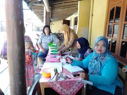
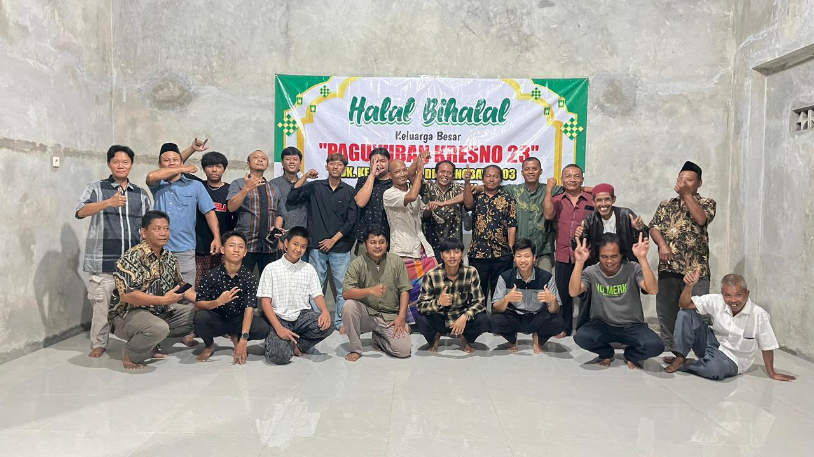

PEMBANGUNAN
Musrenbang Perencanaan Jalan Desa
Pemerintah Desa Tambakboyo bersama perwakilan warga menyepakati pengalokasian dana desa tahun depan fokus pada pengaspalan jalan poros utama.
Baca Selengkapnya →
KESEHATAN
Pemeriksaan Rutin Posyandu Lansia
Program jaminan kesehatan berkala sukses dilaksanakan kader PKK di Balai Desa Tambakboyo dengan tingkat kehadiran warga mencapai 81%.
Baca Selengkapnya →
PENDIDIKAN
Pelatihan Keterampilan Pemuda
Program pelatihan intensif untuk meningkatkan soft skills dan keterampilan teknis generasi muda Tambakboyo agar siap kerja.
Baca Selengkapnya →
EKONOMI
Pemberdayaan UMKM Digital
Pendampingan khusus bagi pelaku UMKM desa untuk memperluas pasar melalui platform online dan branding produk unggulan.
Baca Selengkapnya →